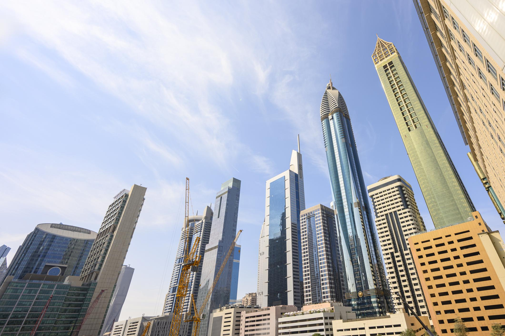

Paris

Paris is the capital city of France and is often called the City of Light. It is famous for its art museums, stylish streets, and world-famous landmarks. Many people visit Paris to enjoy the Eiffel Tower, local cafés, and the unique atmosphere of the city.
- Eiffel Tower
- Louvre Museum
- Seine River
- French cafés
Rome

Rome is the capital of Italy and one of the most historic cities in the world. It is well known for ancient buildings, important religious sites, and traditional Italian food. Visitors to Rome can enjoy both history and culture in one place.
- Colosseum
- Vatican City
- Roman Forum
- Italian restaurants
Tokyo

Tokyo is the capital of Japan and one of the busiest cities in the world. It is known for modern buildings, shopping, technology, and traditional temples. Tokyo is a destination that offers something exciting for every type of visitor.
- Shibuya Crossing
- Tokyo Tower
- Senso-ji Temple
- Japanese street food
Dubai

Dubai is a modern city in the United Arab Emirates and is known for luxury, skyscrapers, and shopping. It is also famous for desert adventures and warm weather. Dubai is a popular choice for people who want a stylish and comfortable holiday.
- Burj Khalifa
- Desert Safari
- Shopping malls
- Beach resorts